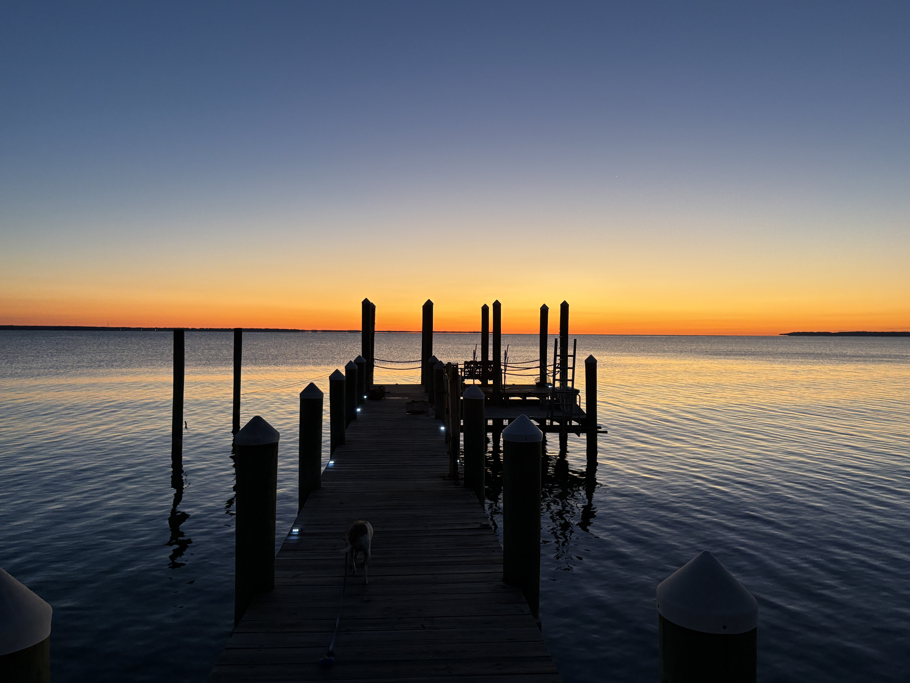

Support the river
This garden is one small part of a much bigger effort. Donations to the Tidewater Oyster Gardeners Association (TOGA) fund the spat, cages, and reef plantings that make projects like this one possible, across the whole watershed.
Where it goes
TOGA is the nonprofit behind the oyster-gardening network this project is part of. They supply spat to volunteer gardeners, coordinate cage placement along the river, and organize the fall collection where gardened oysters — cohorts just like the ones tracked on this site — get planted on protected sanctuary reefs.
Donations support that whole pipeline, not just one garden. A gift funds hatchery-raised spat for new gardeners, cage materials, boat time for reef plantings, and the outreach that keeps the volunteer network growing.
Go to the TOGA donation page →Funds hatchery-raised baby oysters for volunteers starting their own cohorts.
Covers mesh, floats, and hardware for gardens across the watershed.
Pays for the boat time and coordination needed to plant grown oysters on sanctuary reefs each fall.
Supports outreach and training that brings new gardeners like this one into the program.
Ready to help?
Donations are made directly through TOGA's website, a registered nonprofit — this project doesn't collect or handle funds itself.
Donate at oystergardener.org →